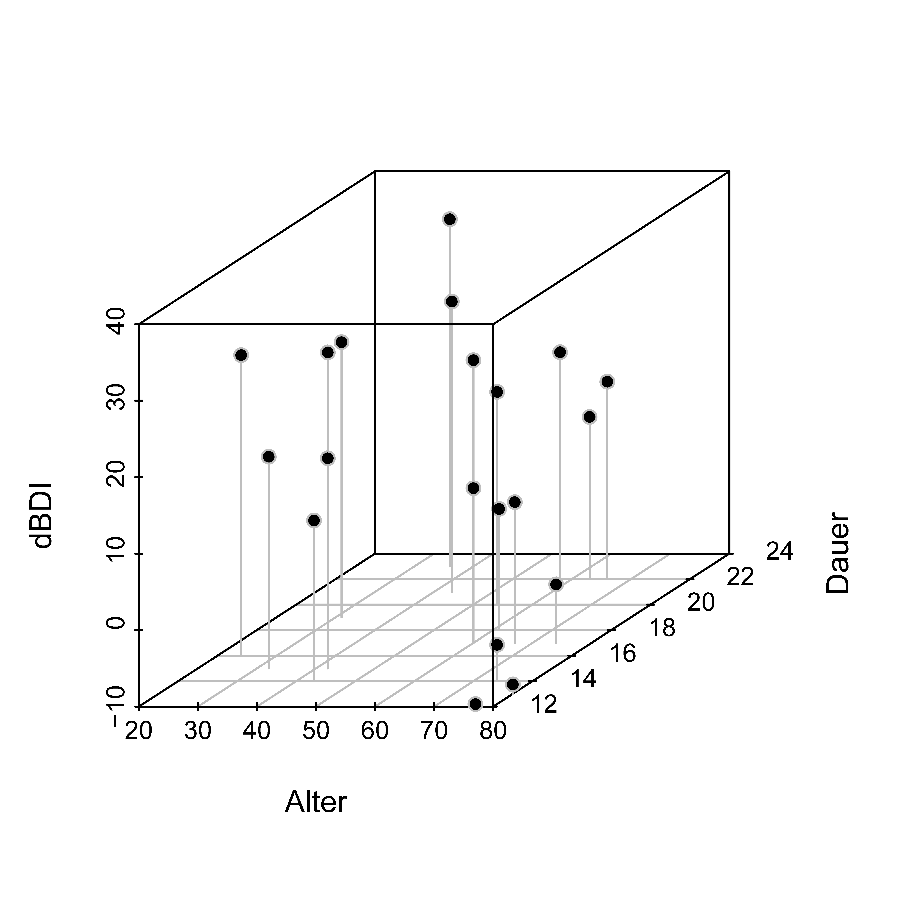
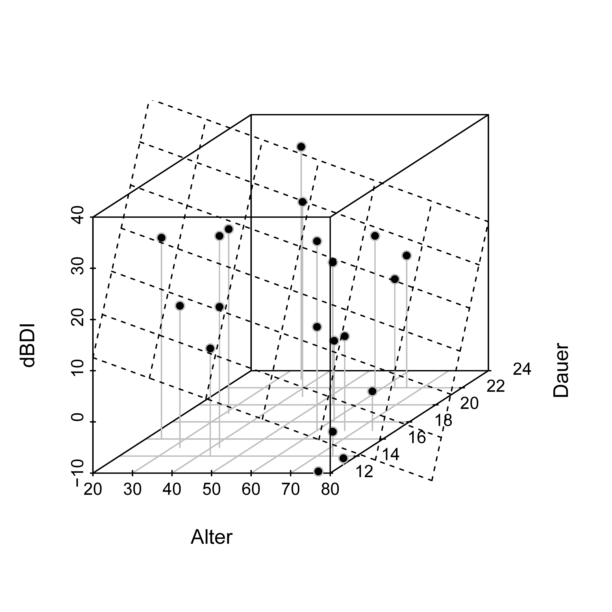

| Alter | Dauer | dBDI |
|---|---|---|
| 36 | 23 | 35.4 |
| 42 | 15 | 17.5 |
| 54 | 20 | 17.8 |
| 74 | 14 | -5.2 |
| 32 | 15 | 17.7 |
| 74 | 17 | -2.4 |
| 77 | 12 | -9.7 |
| 60 | 17 | 10.2 |
| 58 | 22 | 19.7 |
| 24 | 16 | 29.3 |
| 32 | 18 | 26.3 |
| 31 | 19 | 26.0 |
| 61 | 18 | 5.8 |
| 43 | 14 | 11.0 |
| 66 | 22 | 15.8 |
| 50 | 20 | 22.0 |
| 63 | 22 | 11.2 |
| 80 | 13 | -8.8 |
| 43 | 21 | 28.0 |
| 67 | 17 | 8.4 |
35 Multiple Regression
35.1 Anwendungsszenario
Bei der multiplen Regression handelt es sich um die Generalisierung der einfachen linearen Regression im Kontext von mehr als einer kontinuierlichen unabhängigen Variable. Wie bei der einfachen linearen Regression betrachtet man eine univariate abhängige Variable, deren Werte an randomisierten experimentellen Einheiten bestimmt werden. Die unabhängigen Variablen werden bei der multiplen Regression je nach Kontext Regressoren, Prädiktoren, Kovariaten, Features oder einfach Spalten der Designmatrix genannt. Ähnlich wie bei der einfachen linearen Regression ist das Ziel einer multiplen Regressionsanalyse, das Erklärungspotential für Variationen der abhängigen Variablen durch Variation der unabhängigen Variablen zu quantifizieren. In Erweitertung der einfachen linearen Regression liegt ein Augenmerk dabei insbesondere darauf, den Einfluss einzelner unabhängiger Variablen auf die abhängige Variable im Kontext der Variation anderer unabängiger Variablen zu ermitteln. Darüber hinaus mag ein Ziel auch die Prädiktion der Werte der abhängigen Variablen für Werte der unabhängigen Variable nach Schätzung der entsprechenden Wichtungsbetaparameter anhand eines “Trainingsdatensatzes” sein.
Anwendungsbeispiel
Um einige Grundprinzipien der multiplen Regressionsanalyse zu verdeutlichen, beschränken wir uns in diesem Abschnitt meist auf den Fall zweier kontinuierlicher unabhängiger Variablen. Als Anwendungsbeispiel betrachten wir dazu den Effekt einer Psychotherapie auf die Depressionssymptomatik in Abhängigkeit vom Alter der Patient:innen und der Dauer der Therapie. Tabelle 35.1 zeigt einen Beispieldatensatz bestehend aus Datenwerten von \(n=20\) Patient:innen, wobei Alter das Patient:innenalter, Dauer die Therapiedauer und dBDI die Pre-Post-Interventions-BDI-Differenzwerte bezeichnen.
Abbildung 35.1 visualisiert den Beispieldatensatz, wobei die dBDI Werte der Höhe gemäß im dreidimensionalen Raum anhand ihrer Koordinaten in der Alter-Dauer-Ebene abgetragen sind. Die Visualisierung der multiple Regression, insbesondere für mehr als zwei unabhängige Variablen, stößt sehr schnell an ihre Grenzen.

35.2 Modellformulierung
Das Modell der multiplen Regression ist mit der allgemeinen Form des Allgemeinen Linearen Modells identisch. Der Vollständigkeit halber geben wir folgende Definition.
Definition 35.1 (Modell der multiplen Regression) \(\upsilon_{i}\) mit \(i=1, \ldots, n\) sei die Zufallsvariable, die den \(i\)ten Wert einer abhängigen Variable modelliert. Dann hat das Modell der multiplen Regression die strukturelle Form \[ \upsilon_{i}=x_{i1} \beta_{1}+\cdots+x_{ip} \beta_{p}+\varepsilon_{i} \mbox{ mit } \varepsilon_{i} \sim N\left(0, \sigma^{2}\right) \mbox{ u.i.v. für } i=1, \ldots, n \mbox{ und } \sigma^{2}>0, \] wobei \(x_{i j} \in \mathbb{R}\) mit \(1 \leq i \leq n\) und \(1 \leq j \leq p\) den \(i\)ten Wert der \(j\) ten unabhängigen Variable bezeichnet. Die unabhängigen Variablen werden auch Regressoren, Prädiktoren, Kovariaten oder Features genannt. Mit \[ x_{i} := \left(x_{i1}, \ldots, x_{ip}\right)^{T} \in \mathbb{R}^{p} \mbox{ und } \beta:=\left(\beta_{1}, \ldots, \beta_{p}\right)^{T} \in \mathbb{R}^{p} \] hat das Modell der multiplen Regression die Datenverteilungsform \[ \upsilon_{i} \sim N\left(\mu_{i}, \sigma^{2}\right) \text { u.v. für } i=1, \ldots, n, \mbox{ wobei } \mu_{i}:=x_{i}^{T} \beta. \] In diesem Zusammenhang wird \(x_{i} \in \mathbb{R}^{p}\) auch als \(i\)ter Featurevektor bezeichnet. Die Designmatrixform des Modells der multiplen Regression schließlich ist gegeben durch \[ \upsilon = X\beta+\varepsilon \mbox{ mit } \varepsilon \sim N\left(0_{n}, \sigma^{2} I_{n}\right) \] mit \[ \upsilon := \left(\upsilon_{1}, \ldots, \upsilon_{n}\right)^{T}, X:=\left(x_{i j}\right)_{1 \leq i \leq n, 1 \leq j \leq p} \in \mathbb{R}^{n \times p}, \beta:=\left(\beta_{1}, \ldots, \beta_{p}\right)^{T} \in \mathbb{R}^{p} \mbox{ und } \sigma^{2}>0. \]
Folgender R Code nutzt das Modell der multiplen Regression auf Definition 13.1, um den in Tabelle 35.1 dargestellten Beispieldatensatz zu erzeugen.
library(MASS) # Multivariate Normalverteilung
set.seed(1) # reproduzierbare Daten
n = 20 # Anzahl Datenpunkte
p = 3 # Anzahl Parameter
x_1 = round(runif(n,20,80)) # Regressorwerte Alter
x_2 = round(runif(n,12,24)) # Regressorwerte Therapiedauer
X = matrix(c(rep(1,n),x_1,x_2), nrow = n) # Designmatrix
I_n = diag(n) # Identitätsmatrix
beta = matrix(c(5,-.5,2), nrow = p) # Betaparametervektor
sigsqr = 10 # Varianzparameter
y = mvrnorm(1, X %*% beta, sigsqr*I_n) # eine Realisierung eines n-dimensionalen ZVs
D = data.frame(Alter = x_1, Dauer = x_2, dBDI = y) # Dataframeformatierung
write.csv(D, "./_data/411-multiple-regression.csv", row.names = FALSE) # Datenspeichern35.3 Modellschätzung
Das Modell der multiplen Regression erlaubt eine allgemeine Einsicht in die Bedeutung des Betaparameterschätzers \[ \hat{\beta}:=\left(X^{T}X\right)^{-1}X^{T}\upsilon \] Insbesondere wird bei der Beschäftigung mit dem Betaparameterschätzer im Kontext der multiplen Regression deutlich, dass \(X^{T}\upsilon\) die Kovariation der Regressoren mit den Daten und \(X^{T}X\) die Kovariation der Regressoren untereinander quantifiziert, so dass für den Betaparameterschätzer eine Intuition als “regressorkovariationsnormalisierte Regressordatenkovariation” ergibt. Wir wollen dies im Folgenden am Beispiel einer multiplen Regression mit einem Interzeptregressor und zwei Regressoren für zwei unabhängige Variablen vertiefen. Dabei zeigen wir einmal die Form des Betaparameterschätzers in Form von Stichprobenkorrelationen (Theorem 13.1) und einmal in Form von partiellen Stichprobenkorrelationen (Theorem 13.2).
Theorem 35.1 (Betaparameterschätzer und Korrelationen) Gegeben sei ein multiples Regressionsmodel der Form \[ \upsilon = X\beta+\varepsilon, \varepsilon \sim N\left(0_{n}, \sigma^{2} I_{n}\right) \mbox{ mit } X:=\begin{pmatrix} 1 & x_{11} & x_{12} \\ \vdots & \vdots & \vdots \\ 1 & x_{n 1} & x_{n 2} \end{pmatrix} \mbox{ und } \beta := \begin{pmatrix} \beta_{0} \\ \beta_{1} \\ \beta_{2} \end{pmatrix}. \] Dann gilt \[ \hat{\beta} = \begin{pmatrix} \bar{\upsilon}-\hat{\beta}_{1} \bar{x}_{1}-\hat{\beta}_{2} \bar{x}_{2} \\ \frac{r_{\upsilon, x_{1}}-r_{\upsilon, x_{2}} r_{x_{1}, x_{2}}}{1-r_{x_{1}, x_{2}}^{2}} \frac{s_{\upsilon}}{s_{x_{1}}} \\ \frac{r_{\upsilon, x_{2}}-r_{\upsilon, x_{1}} r_{x_{1}, x_{2}}}{1-r_{x_{1}, x_{2}}^{2}} \frac{s_{\upsilon}}{s_{x_{2}}} \end{pmatrix}, \] wobei für die \(\upsilon_{i}, x_{i1}\) und \(x_{i2}\) mit \(i=1, \ldots, n, \bar{\cdot}, s_{\cdot}\) und \(r_{\cdot,\cdot}\), die entsprechenden Stichprobenmittel, Stichprobenstandardabweichungen, und Stichprobenkorrelationen bezeichnen.
Beweis. Wir erinnern zunächst daran, dass die Form des Betaparameterschätzers bekanntlich zum System der Normalengleichungen äquivalent ist (vgl. Kapitel 28) \[ \hat{\beta}=\left(X^{T}X\right)^{-1}X^{T}\upsilon \Leftrightarrow X^{T}X \hat{\beta}=X^{T}\upsilon . \] Ausschreiben des Normalengleichungssystems für den hier betrachteten Spezialfall ergibt dann zunächst \[ \begin{aligned} X^{T}X \hat{\beta} & = X^{T}\upsilon \\ \Leftrightarrow \begin{pmatrix} 1 & \cdots & 1 \\ x_{11} & \cdots & x_{n 1} \\ x_{12} & \cdots & x_{n 2} \end{pmatrix} \begin{pmatrix} 1 & x_{11} & x_{12} \\ \vdots & \vdots & \vdots \\ 1 & x_{n 1} & x_{n 2} \end{pmatrix} \begin{pmatrix} \hat{\beta}_{0} \\ \hat{\beta}_{1} \\ \hat{\beta}_{2} \end{pmatrix} & = \begin{pmatrix} 1 & \cdots & 1 \\ x_{11} & \cdots & x_{n 1} \\ x_{12} & \cdots & x_{n 2} \end{pmatrix} \begin{pmatrix} \upsilon_{1} \\ \vdots \\ \upsilon_{n} \end{pmatrix} \\ \Leftrightarrow \begin{pmatrix} n & \sum_{i=1}^{n} x_{i1} & \sum_{i=1}^{n} x_{i2}\\ \sum_{i=1}^{n} x_{i1} & \sum_{i=1}^{n} x_{i1}^{2} & \sum_{i=1}^{n} x_{i1} x_{i2}\\ \sum_{i=1}^{n} x_{i2}& \sum_{i=1}^{n} x_{i2}x_{i1} & \sum_{i=1}^{n} x_{i2}^{2} \end{pmatrix} \begin{pmatrix} \hat{\beta}_{0} \\ \hat{\beta}_{1} \\ \hat{\beta}_{2} \end{pmatrix} & = \begin{pmatrix} \sum_{i=1}^{n} \upsilon_{i} \\ \sum_{i=1}^{n} \upsilon_{i} x_{i1} \\ \sum_{i=1}^{n} \upsilon_{i} x_{i2} \end{pmatrix} \\ \Leftrightarrow \begin{pmatrix} n & \sum_{i=1}^{n} x_{i1} & \sum_{i=1}^{n} x_{i2}\\ \sum_{i=1}^{n} x_{i1} & \sum_{i=1}^{n} x_{i1}^{2} & \sum_{i=1}^{n} x_{i1} x_{i2}\\ \sum_{i=1}^{n} x_{i2}& \sum_{i=1}^{n} x_{i2}x_{i1} & \sum_{i=1}^{n} x_{i2}^{2} \end{pmatrix} \begin{pmatrix} \hat{\beta}_{0} \\ \hat{\beta}_{1} \\ \hat{\beta}_{2} \end{pmatrix} & = \begin{pmatrix} \sum_{i=1}^{n} \upsilon_{i} \\ \sum_{i=1}^{n} \upsilon_{i} x_{i1} \\ \sum_{i=1}^{n} \upsilon_{i} x_{i2} \end{pmatrix} \end{aligned} \] und damit \[ \begin{aligned} X^{T}X \hat{\beta} & = X^{T}\upsilon \\ \Leftrightarrow \begin{pmatrix} n \hat{\beta}_{0}+\hat{\beta}_{1} \sum_{i=1}^{n} x_{i1}+\hat{\beta}_{2} \sum_{i=1}^{n} x_{i2}\\ \hat{\beta}_{0} \sum_{i=1}^{n} x_{i1}+\hat{\beta}_{1} \sum_{i=1}^{n} x_{i1}^{2}+\hat{\beta}_{2} \sum_{i=1}^{n} x_{i1} x_{i2}\\ \hat{\beta}_{0} \sum_{i=1}^{n} x_{i2}+\hat{\beta}_{1} \sum_{i=1}^{n} x_{i1} x_{i2}+\hat{\beta}_{2} \sum_{i=1}^{n} x_{i2}^{2} \end{pmatrix} & = \begin{pmatrix} \sum_{i=1}^{n} \upsilon_{i} \\ \sum_{i=1}^{n} \upsilon_{i} x_{i1} \\ \sum_{i=1}^{n} \upsilon_{i} x_{i2} \end{pmatrix}. \end{aligned} \] Aus der Gleichung der ersten Vektorkomponenten folgt dann direkt die Form von \(\hat{\beta}_{0}\) mit \[ \begin{aligned} \sum_{i=1}^{n} \upsilon_{i} & = n\hat{\beta}_{0}+\hat{\beta}_{1} \sum_{i=1}^{n} x_{i1}+\hat{\beta}_{2} \sum_{i=1}^{n} x_{i2} \\ \Leftrightarrow \frac{1}{n} \sum_{i=1}^{n} \upsilon_{i} & = \hat{\beta}_{0}+\hat{\beta}_{1} \frac{1}{n} \sum_{i=1}^{n} x_{i1}+\hat{\beta}_{2} \frac{1}{n} \sum_{i=1}^{n} x_{i2} \\ \Leftrightarrow \hat{\beta}_{0} & = \bar{\upsilon}-\hat{\beta}_{1} \bar{x}_{1}-\hat{\beta}_{2} \bar{x}_{2}. \end{aligned} \] Einsetzen dieser Form von \(\hat{\beta}_{0}\) in die Gleichung der zweiten Vektorkomponenten ergibt dann \[ \begin{aligned} \hat{\beta}_{0} \sum_{i=1}^{n} x_{i1}+\hat{\beta}_{1} \sum_{i=1}^{n} x_{i1}^{2}+\hat{\beta}_{2} \sum_{i=1}^{n} x_{i1} x_{i2} & =\sum_{i=1}^{n} \upsilon_{i} x_{i1} \Leftrightarrow \\ \left(\bar{\upsilon}-\hat{\beta}_{1} \bar{x}_{1}-\hat{\beta}_{2} \bar{x}_{2}\right) \sum_{i=1}^{n} x_{i1}+\hat{\beta}_{1} \sum_{i=1}^{n} x_{i1}^{2}+\hat{\beta}_{2} \sum_{i=1}^{n} x_{i1} x_{i2} & =\sum_{i=1}^{n} \upsilon_{i} x_{i1} \\ \Leftrightarrow \bar{\upsilon} \sum_{i=1}^{n} x_{i1}-\hat{\beta}_{1} \bar{x}_{1} \sum_{i=1}^{n} x_{i1}-\hat{\beta}_{2} \bar{x}_{2} \sum_{i=1}^{n} x_{i1}+\hat{\beta}_{1} \sum_{i=1}^{n} x_{i1}^{2}+\hat{\beta}_{2} \sum_{i=1}^{n} x_{i1} x_{i2} & = \sum_{i=1}^{n} \upsilon_{i} x_{i1} \\ \Leftrightarrow \hat{\beta}_{1} \sum_{i=1}^{n} x_{i1}^{2}-\hat{\beta}_{1} \bar{x}_{1} \sum_{i=1}^{n} x_{i1}+\hat{\beta}_{2} \sum_{i=1}^{n} x_{i1} x_{i2}-\hat{\beta}_{2} \bar{x}_{2} \sum_{i=1}^{n} x_{i1} & = \sum_{i=1}^{n} \upsilon_{i} x_{i1}-\bar{\upsilon} \sum_{i=1}^{n} x_{i1} \\ \Leftrightarrow \hat{\beta}_{1}\left(\sum_{i=1}^{n} x_{i1}^{2}-\bar{x}_{1} \sum_{i=1}^{n} x_{i1}\right)+\hat{\beta}_{2}\left(\sum_{i=1}^{n} x_{i1} x_{i2}-\bar{x}_{2} \sum_{i=1}^{n} x_{i1}\right) & =\sum_{i=1}^{n} \upsilon_{i} x_{i1}-\bar{\upsilon} \sum_{i=1}^{n} x_{i1} \end{aligned} \] Im Beweis des Theorems zur Ausgleichsgerade (vgl. Kapitel 25) haben wir gesehen, dass \[ \begin{aligned} \sum_{i=1}^{n} x_{i1}^2-\bar{x}_{1} \sum_{i=1}^{n} x_{i1} & =\sum_{i=1}^{n}\left(x_{i1}-\bar{x}_{1}\right)\left(x_{i1}-\bar{x}_{1}\right) \\ \sum_{i=1}^{n} x_{i1} x_{i2}-\bar{x}_{2} \sum_{i=1}^{n} x_{i1} & =\sum_{i=1}^{n}\left(x_{i1}-\bar{x}_{1}\right)\left(x_{i2}-\bar{x}_{2}\right) \\ \sum_{i=1}^{n} \upsilon_{i} x_{i1}-\bar{\upsilon} \sum_{i=1}^{n} x_{i1} & =\sum_{i=1}^{n}\left(\upsilon_{i}-\bar{\upsilon}\right)\left(x_{i1}-\bar{x}_{1}\right) \end{aligned} \] Es ergibt sich also, dass \[ \begin{aligned} \hat{\beta}_{1} \sum_{i=1}^{n}\left(x_{i1}-\bar{x}_{1}\right)\left(x_{i1}-\bar{x}_{1}\right)+\hat{\beta}_{2} \sum_{i=1}^{n}\left(x_{i1}-\bar{x}_{1}\right)\left(x_{i2}-\bar{x}_{2}\right) & = \sum_{i=1}^{n}\left(\upsilon_{i}-\bar{\upsilon}\right)\left(x_{i1}-\bar{x}_{1}\right) \\ \Leftrightarrow \hat{\beta}_{1} \frac{\sum_{i=1}^{n}\left(x_{i1}-\bar{x}_{1}\right)\left(x_{i1}-\bar{x}_{1}\right)}{n-1}+\hat{\beta}_{2} \frac{\sum_{i=1}^{n}\left(x_{i1}-\bar{x}_{1}\right)\left(x_{i2}-\bar{x}_{2}\right)}{n-1} & =\frac{\sum_{i=1}^{n}\left(\upsilon_{i}-\bar{\upsilon}\right)\left(x_{i1}-\bar{x}_{1}\right)}{n-1} \end{aligned} \] Mit den Definitionen von Stichprobenstandardabweichung und -korrelation folgt dann weiter \[ \begin{aligned} \hat{\beta}_{1} s_{x_{1}} s_{x_{1}}+\hat{\beta}_{2} c_{x_{1}, x_{2}} & = c_{\upsilon, x_{1}} \\\Leftrightarrow \hat{\beta}_{1} \frac{s_{x_{1}} s_{x_{1}}}{s_{\upsilon} s_{x_{1}}}+\hat{\beta}_{2} \frac{c_{x_{1}, x_{2}}}{s_{\upsilon} s_{x_{1}}} & = \frac{c_{\upsilon, x_{1}}}{s_{\upsilon} s_{x_{1}}} \\\Leftrightarrow \hat{\beta}_{1} \frac{s_{x_{1}}}{s_{\upsilon}}+\hat{\beta}_{2} \frac{c_{x_{1}, x_{2}}}{s_{\upsilon} s_{x_{1}}} & = r_{\upsilon, x_{1}} \\\Leftrightarrow \hat{\beta}_{1} \frac{s_{x_{1}}}{s_{\upsilon}}+\hat{\beta}_{2} \frac{c_{x_{1}, x_{2}} s_{x_{2}}}{s_{\upsilon} s_{x_{1}} s_{x_{2}}} & = r_{\upsilon, x_{1}} \\\Leftrightarrow \hat{\beta}_{1} \frac{s_{x_{1}}}{s_{\upsilon}}+\hat{\beta}_{2} \frac{s_{x_{2}}}{s_{\upsilon}} r_{x_{1}, x_{2}} & = r_{\upsilon, x_{1}} \end{aligned} \] Definition von \[ b_{j}:=\frac{s_{x_{j}}}{s_{\upsilon}}, j=1,2 \] erlaubt dann die Schreibweise \[ b_{1}+b_{2} r_{x_{1}, x_{2}}=r_{\upsilon, x_{1}} \] Schließlich folgt analog durch Vertauschen der Subskripte aus der Gleichung der dritten Vektorkomponenten \[ b_{1} r_{x_{1}, x_{2}}+b_{2}=r_{\upsilon, x_{2}} \] Insgesamt haben wir also gesehen, dass die Definition des Betaparameterschätzers Spezialfall des Allgemeinen Linearen Modells ergibt, dass mit \[ \hat{\beta}_{j}=b_{j} \frac{s_{\upsilon}}{s_{x_{j}}}, j=1,2 \] gilt, dass \[ \begin{aligned} & r_{\upsilon, x_{1}}=b_{1}+b_{2} r_{x_{1}, x_{2}} \\ & r_{\upsilon, x_{2}}=b_{1} r_{x_{1}, x_{2}}+b_{2} \end{aligned} \] Damit folgt aus der zweiten Gleichung dann sofort \[ b_{2}=r_{\upsilon, x_{2}}-b_{1} r_{x_{1}, x_{2}}. \] Einsetzen in die erste Gleichung ergibt dann \[ \begin{aligned} b_{1}+\left(r_{\upsilon, x_{2}}-b_{1} r_{x_{1}, x_{2}}\right) r_{x_{1}, x_{2}} & =r_{\upsilon, x_{1}} \\\Leftrightarrow b_{1}+r_{\upsilon, x_{2}} r_{x_{1}, x_{2}}-b_{1} r_{x_{1}, x_{2}}^{2} & = r_{\upsilon, x_{1}} \\\Leftrightarrow r_{\upsilon, x_{2}} r_{x_{1}, x_{2}}+b_{1}\left(1-r_{x_{1}, x_{2}}^{2}\right) & = r_{\upsilon, x_{1}} \\\Leftrightarrow b_{1}\left(1-r_{x_{1}, x_{2}}^{2}\right) & =r_{\upsilon, x_{1}}-r_{\upsilon, x_{2}} r_{x_{1}, x_{2}} \\\Leftrightarrow b_{1} & = \frac{r_{\upsilon, x_{1}}-r_{\upsilon, x_{2}} r_{x_{1}, x_{2}}}{1-r_{x_{1}, x_{2}}^{2}} \end{aligned} \] Für \(b_{2}\) ergibt sich damit weiterhin \[ \begin{aligned} b_{2} & = r_{\upsilon, x_{2}}-b_{1} r_{x_{1}, x_{2}} \\\Leftrightarrow b_{2} & = r_{\upsilon, x_{2}}-\left(\frac{r_{\upsilon, x_{1}}-r_{\upsilon, x_{2}} r_{x_{1}, x_{2}}}{1-r_{x_{1}, x_{2}}^{2}}\right) r_{x_{1}, x_{2}} \\\Leftrightarrow b_{2} & = \frac{r_{\upsilon, x_{2}}\left(1-r_{x_{1}, x_{2}}^{2}\right)}{1-r_{x_{1}, x_{2}}^{2}}-\frac{r_{\upsilon, x_{1}} r_{x_{1}, x_{2}}-r_{\upsilon, x_{2}} r_{x_{1}, x_{2}}^{2}}{1-r_{x_{1}, x_{2}}^{2}} \\\Leftrightarrow b_{2} & = \frac{r_{\upsilon, x_{2}}-r_{\upsilon, x_{2}} r_{x_{1}, x_{2}}^{2}-r_{\upsilon, x_{1}} r_{x_{1}, x_{2}}+r_{\upsilon, x_{2}} r_{x_{1}, x_{2}}^{2}}{1-r_{x_{1}, x_{2}}^{2}} \\ \Leftrightarrow b_{2} & =\frac{r_{\upsilon, x_{2}}-r_{\upsilon, x_{1}} r_{x_{1}, x_{2}}}{1-r_{x_{1}, x_{2}}^{2}} \end{aligned} \] Damit folgen dann aber \[ \begin{aligned} \hat{\beta}_{1} & =b_{1} \frac{s_{\upsilon}}{s_{x_{1}}}=\left(\frac{r_{\upsilon, x_{1}}-r_{\upsilon, x_{2}} r_{x_{1}, x_{2}}}{1-r_{x_{1}, x_{2}}^{2}}\right) \frac{s_{\upsilon}}{s_{x_{1}}} \\ \hat{\beta}_{2} & =b_{2} \frac{s_{\upsilon}}{s_{x_{2}}}=\left(\frac{r_{\upsilon, x_{2}}-r_{\upsilon, x_{1}} r_{x_{1}, x_{2}}}{1-r_{x_{1}, x_{2}}^{2}}\right) \frac{s_{\upsilon}}{s_{x_{2}}} \end{aligned} \] und es ist alles gezeigt.
Exemplarisch wollen wir die Stichprobenkorrelationsform des Betaparameterschätzers für \(\beta_{1}\) \[ \hat{\beta}_{1}=\frac{r_{\upsilon, x_{1}}-r_{\upsilon, x_{2}} r_{x_{1}, x_{2}}}{1-r_{x_{1}, x_{2}}^{2}} \frac{s_{\upsilon}}{s_{x_{1}}} \] betrachten. Man erkennt unter anderem:
- Nur im Fall \(r_{x_{1}, x_{2}}=0\) und \(s_{\upsilon}=s_{x_{1}}\) gilt \(\hat{\beta}_{1}=r_{\upsilon, x_{1}}\). Die Betaparameterschätzer der multiplen Regression sind also im Allgemeinen nicht mit den Stichprobenkorrelationen zwischen dem entsprechenden Regressor und den Daten identisch.
- Im Fall \(r_{x_{1}, x_{2}}= \pm 1\) ist \(\hat{\beta}_{1}\) nicht definiert. Vollständig korrelierte Regressoren ergeben also ein nicht schätzbares Modell.
- Je größer \(\left|r_{x_{1}, x_{2}}\right|\), desto größer der von \(r_{\upsilon, x_{1}}\) subtrahierte Term \(r_{\upsilon, x_{2}} r_{x_{1}, x_{2}}\). Die paarweise Korrelation von Regressoren untereinander reduziert also den Betaparameterschätzerwert für einen Regressor.
- Je größer \(\left|r_{\upsilon, x_{2}}\right|\), desto größer der von \(r_{\upsilon, x_{1}}\) subtrahierte Term \(r_{\upsilon, x_{2}} r_{x_{1}, x_{2}}\). Neben der paarweisen Korrelation von Regressoren untereinander reduziert also auch eine hohe Stichprobenkorrelation eines anderen Regressors mit den Daten den Wert eines Betaparameterschätzers.
- Bei identischen Korrelationen und gleich bleibender Regressorstandabweichung steigt \(\hat{\beta}_{1}\) mit \(s_{\upsilon}\). Intuitiv erhält also ein Regressor einen höhreren Betaparameterschätzerwert, wenn er bei gleich Korrelationsstruktur mehr Datenvariabilität erklärt.
Zusammengefasst verdeutlichen obige Punkte, dass der Wert des Betaparameterschätzers eines Regressors im Modell der multiplen Regression allein im Kontext der Korrelationsstruktur der anderen Regressoren mit sich selbst und den Daten betrachtet werden kann und damit keinen modellunabhängigen Absolutbeitrag eines spezifischen Regressors zur Erklärung der Daten abbildet.
Folgender R Code demonstriert die Äquivalenz der Matrixschreibweise des Betaparameterschätzers und seiner Darstellung durch Stichprobenmittel, Stichprobenkorrelationen, und Stichprobenstandardabweichungen.
Folgendes Theorem stellt den Bezug zwischen multipler Regression und partiellen Korrelationen zwischen unabhängigen und abhängigen Variablen für das betrachtete Szenario her.
Theorem 35.2 (Betaparameterschätzer und partielle Korrelationen) Gegeben sei ein multiples Regressionsmodel der Form \[ \upsilon = X\beta+\varepsilon, \varepsilon \sim N\left(0_{n}, \sigma^{2} I_{n}\right) \mbox{ mit } X := \begin{pmatrix} 1 & x_{11} & x_{12} \\ \vdots & \vdots & \vdots \\ 1 & x_{n 1} & x_{n 2} \end{pmatrix} \mbox{ und } \beta := \begin{pmatrix} \beta_{0} \\ \beta_{1} \\ \beta_{2} \end{pmatrix}. \] Dann gilt \[ \hat{\beta} = \begin{pmatrix} \bar{\upsilon}-\hat{\beta}_{1} \bar{x}_{1}-\hat{\beta}_{2} \bar{x}_{2} \\ r_{\upsilon, x_{1} \backslash x_{2}} \sqrt{\frac{1-r_{\upsilon, x_{2}}^{2}}{1-r_{x_{1}, x_{2}}^{2}}} \frac{s_{\upsilon}}{s_{x_{1}}} \\ r_{\upsilon, x_{2} \backslash x_{1}} \sqrt{\frac{1-r_{\upsilon, x_{1}}^{2}}{1-r_{x_{2}, x_{1}}^{2}}} \frac{s_{\upsilon}}{s_{x_{2}}} \end{pmatrix}, \] wobei für \(1 \leq k, l \leq 2\) und \(i=1, \ldots, n\)
- \(r_{\upsilon, x_{k} \backslash x_{l}}\) die partielle Stichprobenkorrelation der \(\upsilon_{i}\) und \(x_{i k}\) gegeben die \(x_{i l}\) ist,
- \(r_{\upsilon, x_{k}}\) die Stichprobenkorrelation der \(\upsilon_{i}\) und \(x_{i k}\) ist, und
- \(r_{x_{k}, x_{l}}\) die Stichprobenkorrelation der \(x_{ik}\) und \(x_{il}\) ist.
Beweis. Wir betrachten \(\hat{\beta}_{1}\), das Resultat für \(\hat{\beta}_{2}\) folgt dann durch Vertauschen der Indizes. Wir haben in vorherigem Theorem gesehen, dass \[ \hat{\beta}_{1}=\frac{r_{\upsilon, x_{1}}-r_{\upsilon, x_{2}} r_{x_{1}, x_{2}}}{1-r_{x_{1}, x_{2}}^{2}} \frac{s_{\upsilon}}{s_{x_{1}}} \] Weiterhin haben wir in Kapitel 34 gesehen, dass unter der Annahme der multivariaten Normalverteilung von \(\upsilon, x_{1}, x_{2}\) ein Schätzer für die partielle Korrelation von \(\upsilon\) und \(x_{1}\) gegeben \(x_{2}\) durch \[ r_{\upsilon, 2} = \frac{r_{\upsilon, x_{1}}-r_{\upsilon, x_{2}} r_{x_{1}, x_{2}}}{\sqrt{1-r_{\upsilon, x_{2}}^{2}} \sqrt{1-r_{x_{1}, x_{2}}^{2}}} \] gegeben ist. Für \(\hat{\beta}_{1}\) ergibt sich somit \[ \begin{aligned} \hat{\beta}_{1} & = \frac{r_{\upsilon, x_{1}}-r_{\upsilon, x_{2}} r_{x_{1}, x_{2}}}{1-r_{x_{1}, x_{2}}^{2}} \frac{s_{\upsilon}}{s_{x_{1}}} \\\Leftrightarrow \left(1-r_{x_{1}, x_{2}}^{2}\right) \hat{\beta}_{1} & = \left(r_{\upsilon, x_{1}}-r_{\upsilon, x_{2}} r_{x_{1}, x_{2}}\right) \frac{s_{\upsilon}}{s_{x_{1}}} \\\Leftrightarrow \frac{1-r_{x_{1}, x_{2}}^{2}}{\sqrt{1-r_{\upsilon, x_{2}}^{2}} \sqrt{1-r_{x_{1}, x_{2}}^{2}}} \hat{\beta}_{1} & =\frac{r_{\upsilon, x_{1}}-r_{\upsilon, x_{2}} r_{x_{1}, x_{2}}}{\sqrt{1-r_{\upsilon, _{2}}^{2}} \sqrt{1-r_{x_{1}, x_{2}}^{2}}} \frac{s_{\upsilon}}{s_{x_{1}}} \\\Leftrightarrow \frac{1-r_{x_{1}, x_{2}}^{2}}{\sqrt{1-r_{\upsilon, x_{2}}^{2}} \sqrt{1-r_{x_{1}, x_{2}}^{2}}} \hat{\beta}_{1} & = r_{\upsilon, x_{1} \backslash x_{2}} \frac{s_{\upsilon}}{s_{x_{1}}} \end{aligned} \] und damit weiter \[ \begin{aligned} \hat{\beta}_{1} & = r_{\upsilon, x_{1} \backslash x_{2}} \frac{\sqrt{1-r_{\upsilon, x_{2}}^{2}} \sqrt{1-r_{x_{1}, x_{2}}^{2}}}{1-r_{x_{1}, x_{2}}^{2}} \frac{s_{\upsilon}}{s_{x_{1}}} \\\Leftrightarrow \hat{\beta}_{1} & = r_{\upsilon, x_{1} \backslash x_{2}} \frac{\sqrt{1-r_{\upsilon, x_{2}}^{2}} \sqrt{1-r_{x_{1}, x_{2}}^{2}}}{\left(\sqrt{1-r_{x_{1}, x_{2}}^{2}}\right)^{2}} \frac{s_{\upsilon}}{s_{x_{1}}} \\\Leftrightarrow \hat{\beta}_{1} & = r_{\upsilon, x_{1} \backslash x_{2}} \frac{\sqrt{1-r_{\upsilon, x_{2}}^{2}}}{\sqrt{1-r_{x_{1}, x_{2}}^{2}}} \frac{s_{\upsilon}}{s_{x_{1}}} \\\Leftrightarrow \hat{\beta}_{1} & = r_{\upsilon, x_{1} \backslash x_{2}} \sqrt{\frac{1-r_{\upsilon, x_{2}}^{2}}{1-r_{x_{1}, x_{2}}^{2}}} \frac{s_{\upsilon}}{s_{x_{1}}} \end{aligned} \]
Im Allgemeinen gilt für \(1 \leq i, l \leq k\), also dass \[ \hat{\beta}_{k} \neq r_{\upsilon, x_{k} \backslash x_{l}}. \] Betaparameterschätzer sind also im Allgemeinen keine partiellen Stichprobenkorrelationen. # Allerdings gilt \[ \hat{\beta}_{k}=r_{\upsilon, x_{k} \backslash x_{l}} \text { für } 1 \leq i, l \leq k \] genau dann, wenn \[ s_{\upsilon}=s_{x_{1}}=s_{x_{2}} \] und außerdem \[ r_{\upsilon, x_{k}}=r_{x_{k}, x_{l}}=0 \] wenn also die Stichprobenkorrelationen der Daten und der Werte des zweiten Regressors, sowie die Stichprobenkorrelation der Werte der beiden Regressoren gleich Null sind. Dies kann der Fall sein, wenn einer der Regressoren die Daten “sehr gut erklärt” und der andere Regressor von dem ersten “sehr verschieden” ist. Schließlich gilt obige Identität von Betaparameterschätzerkomponente und partieller Stichprobenkorrelation auch dann, wenn \[ \left|r_{\upsilon, x_{l}}\right|=\left|r_{x_{k}, x_{l}}\right|, \] wenn also die obigen Stichprobenkorrelationen dem Betrage nach gleich sind. Dies ist in der Anwendung aber vermutlich selten der Fall.
Folgender R Code demonstriert die Äquivalenz der Matrixschreibweise des Betaparameterschätzers und seiner Darstellung durch Stichprobenmittel, Stichprobenkorrelationen, Stichprobenstandardabweichungen und partielle Stichprobenkorrelationen.
D = read.csv("./_data/411-multiple-regression.csv") # Dateneinlesen
y = D$dBDI # Abhängige Variable
n = length(y) # Anzahl Datenpunkte
X = matrix(c(rep(1,n), D$Alter, D$Dauer), nrow = n) # Designmatrix
p = ncol(X) # Anzahl Parameter
beta_hat = solve(t(X) %*% X) %*% t(X) %*% y # Betaparameterschätzer
eps_hat = y - X %*% beta_hat # Residuenvektor
sigsqr_hat = (t(eps_hat) %*% eps_hat) /(n-p) # Varianzparameterschätzer
# Betaparameterschätzer aus partiellen Korrelationen und Korrelationen
library(ppcor) # partielle Korrelationentoolbox
y12 = cbind(y,X[,2:3]) # y,x_1,x_2 Matrix
bars = apply(y12, 2, mean) # Stichprobenmittel
s = apply(y12, 2, sd) # Stichprobenstandardabweichungen
r = cor(y12) # Stichprobenkorrelationen
pr = pcor(y12) # partielle Stichprobenkorrelationen
pr = pr$estimate # partielle Stichprobenkorrelationen
beta_hat_1 = pr[1,2]*sqrt((1-r[1,3]^2)/(1-r[2,3]^2))*(s[1]/s[2]) # \hat{\beta}_1
beta_hat_2 = pr[1,3]*sqrt((1-r[1,2]^2)/(1-r[3,2]^2))*(s[1]/s[3]) # \hat{\beta}_2
beta_hat_0 = bars[1] - beta_hat_1*bars[2] - beta_hat_2*bars[3] # \hat{\beta}_0Korrelationen r(dPOMS,AGE),r(dPOMS,BRI),r(AGE,BRI) : -0.87 0.64 -0.22
Partielle Korrelationen r(dPOMS,AGE|BRI), r(dPOMS,BRI|AGE) : -0.97 0.92
beta_hat ALM Schätzer : 11.44 -0.57 1.85
beta_hat aus partieller Korrelation : 11.44 -0.57 1.85Abbildung 35.2 visualisiert den Beispieldatensatz zusammen mit der durch den Betaparameterschätzer definierten Regressionsebene.
\[ f_{\hat{\beta}}: \mathbb{R}^{2} \rightarrow \mathbb{R}, \left(x_{1}, x_{2}\right) \mapsto f_{\hat{\beta}}\left(x_{1} x, x_{2}\right) := \hat{\beta}_{0}+\hat{\beta}_{1} x_{1}+\hat{\beta}_{2} x_{2} \]

35.4 Modellevaluation
Die allgemeine Theorie der T- und F-Statistiken bietet eine Vielzahl von Möglichkeiten, verschiedenste Hypothesen im Kontext der multiplen Regression inferenzstatistisch zu evaluieren. Für das Anwendungsbeispiel könnte zum Beispiel folgende Auswahl von Kontrastgewichtsvektoren und Null- und Alternativenhypothesen zunächst von Interesse sein:
\[ c:=\begin{pmatrix} 0 \\ 1 \\ 0 \end{pmatrix} \Leftrightarrow H_{0}: \beta_{2}=0, H_{A}: \beta_{2} \neq 0 \mbox{ und } c:=\begin{pmatrix} 0 \\ 0 \\ 1 \end{pmatrix} \Leftrightarrow H_{0}: \beta_{3}=0, H_{A}: \beta_{3} \neq 0 \]
Dabei würde das Ablehnen der jeweiligen Nullhypothese jeweils inferenzstatistische Evidenz für einen Effekt des Patient:innenalters bzw. der Therapiedauer auf die Pre-PostBDI-Differenz im Kontext der Präsenz der jeweils anderen unabhängigen Variable und des Interzeptterms implizieren.
Weiterhin könnte folgender Kontrastgewichtsvektor mit folgenden Null- und Alternativhypothesen von Interesse sein:
\[ c:= \begin{pmatrix} 0 \\ 1 \\ -1 \end{pmatrix} \Leftrightarrow H_{0}: \beta_{2}-\beta_{3}=0, H_{A}: \beta_{2}-\beta_{3} \neq 0 \] In diesem Fall würde das Ablehnen der Nullhypothese inferenzstatistische Evidenz für einen differentiellen Einfluss von Patient:innenalter und Therapiedauer implizieren, je nach Vorzeichen der T-Statistik dabei einen stärkeren Effekt des Patient:innenalters oder der Therapiedauer.
Folgender R Code evaluiert evaluiert die angesprochenen T-Tests.
D = read.csv("./_data/411-multiple-regression.csv") # Datensatz
y = D$dBDI # Abhängige Variable
n = length(y) # Anzahl Datenpunkte
X = matrix(c(rep(1,n), D$Alter, D$Dauer), nrow = n) # Designmatrix
p = ncol(X) # Anzahl Parameter
beta_hat = solve(t(X) %*% X) %*% t(X) %*% y # Betaparameterschätzer
eps_hat = y - X %*% beta_hat # Residuenvektor
sigsqr_hat = (t(eps_hat) %*% eps_hat) /(n-p) # Varianzparameterschätzer
C = cbind(diag(p), matrix(c(0,1,-1), nrow = 3)) # Kontrastgewichtsvektoren
ste = rep(NaN, ncol(C)) # Konstraststandardfehler
tee = rep(NaN, ncol(C)) # T-Statistiken
pvals = rep(NaN, ncol(C)) # p-Werte
for(i in 1:ncol(C)){ # Kontrastiterationen
c = C[,i] # Kontrastgewichtsvektor
t_num = t(c)%*%beta_hat # Zähler der T-Statistik
ste[i] = sqrt(sigsqr_hat*t(c)%*%solve(t(X)%*%X)%*%c) # Kontraststandardfehler/Nenner der T-Statistik
tee[i] = t_num/ste[i] # T-Statistik
pvals[i] = 2*(1 - pt(abs(tee[i]),n-p)) # p-Wert
} Estimate Std. Error t value Pr(>|t|)
(Interzept) 11.44 4.20 2.73 0.01
Alter -0.57 0.04 -16.00 0.00
Dauer 1.85 0.19 9.97 0.00
Alter-Dauer -2.42 0.18 -13.37 0.00Der Beispieldatensatz liefert also inferenstatistische Inferenz für einen negativen Zusammenhang zwischen Therapieerfolg und Patient:innenalter und einen positiven Zusammenhang zwischen Therapieerfolg und Therapiedauer. Die Differenz der beiden Effekte ist dabei deutlich ausgeprägt.
Etwas globaler könnte man einen F-Test basierend auf einer Modellpartition mit \(p_{0}:=\) 1 nutzen, um etwa zu klären, ob die Daten die Annahme, dass Patient:innenalter und Therapie überhaupt zur Erklärung der Pre-Post-BDI-Differenzwertvariation, bestätigen. Folgender R Code evaluiert den angesprochenen F-Test.
D = read.csv("./_data/411-multiple-regression.csv") # Datensatz
y = D$dBDI # Abhängige Variable
n = length(y) # Anzahl Datenpunkte
X = matrix(c(rep(1,n), D$Alter, D$Dauer), nrow = n) # Desigmatrix vollständiges Modell
p = ncol(X) # Anzahl Parameter vollständiges Modell
p_0 = 1 # Anzahl Parameter reduziertes Modell
p_1 = p - p_0 # Anzahl zusätzlicher Parameter im vollst. Modell
X_0 = X[,1:p_0] # Designmatrix reduzierters Modell
beta_hat_0 = solve(t(X_0)%*%X_0)%*%t(X_0)%*%y # Betaparameterschätzer reduziertes Modell
beta_hat = solve(t(X) %*%X )%*%t(X) %*%y # Betaparameterschätzer vollständiges Modell
eps_hat_0 = y - X_0 %*% beta_hat_0 # Residuenvektor reduziertes Modell
eps_hat = y - X %*% beta_hat # Residuenvektor vollständiges Modell
eh0_eh0 = t(eps_hat_0) %*% eps_hat_0 # RQS reduziertes Modell
eh_eh = t(eps_hat) %*% eps_hat # RQS vollständiges Modell
sigsqr_hat = eh_eh/(n-p) # Varianzparameterschätzer vollst. Modell
f = ((eh0_eh0-eh_eh)/p_1)/sigsqr_hat # F-Statistik
pval = 1 - pf(f,p_1,n-p) # p-WertF-statistic: 223.7 on 2 and 17 DF p-value: 6.17950135506362e-13Der Beispieldatenzsatz enthält also deutliche Evidenz dafür, dass sowohl Patient:innenalter als auch Therapiedauer zur Erklärung der Pre-Post-BDI-Differenzwertvariation über Patient:innen beiträgt.
Eine direkte Implementation obiger Analyse erlaubt das Zusammenspiel der R Funktionen lm() und summary(), wie untenstehender R Code demonstriert.
D = read.csv("./_data/411-multiple-regression.csv") # Datensatz
alm = lm(dBDI ~ Alter + Dauer, data = D) # Modellformulierung und Modellschätzung
summary(alm) # Modellevaluation
Call:
lm(formula = dBDI ~ Alter + Dauer, data = D)
Residuals:
Min 1Q Median 3Q Max
-4.9474 -2.0549 0.6748 1.9590 3.7926
Coefficients:
Estimate Std. Error t value Pr(>|t|)
(Intercept) 11.43949 4.19776 2.725 0.0144 *
Alter -0.57162 0.03573 -15.997 1.11e-11 ***
Dauer 1.85132 0.18577 9.966 1.63e-08 ***
---
Signif. codes: 0 '***' 0.001 '**' 0.01 '*' 0.05 '.' 0.1 ' ' 1
Residual standard error: 2.612 on 17 degrees of freedom
Multiple R-squared: 0.9634, Adjusted R-squared: 0.9591
F-statistic: 223.7 on 2 and 17 DF, p-value: 6.179e-1335.5 Literaturhinweise
Die moderne Geschichte der multiplen Regression wird oft in den Arbeiten von Legendre (1805) und Gauss (1809) zur Berechnung von Planetenbahnen verankert. Die heutige Theorie der multiplen Regression sehr breit gefächert, so dass wir in diesem Abschnitt nur einen ersten Eindruck von ihrem Wesen vermitteln können. Weiterführende Einsichten bieten zum Beispiel Draper & Smith (1998), Hocking (2003) und Fox & Tishby (2016).
35.6 Selbstkontrollfragen
- Erläutern Sie das Anwendungsszenario und die Ziele der multiplen Regression.
- Geben Sie die Definition des Modells der multiplen Regression wieder.
- Erläutern Sie die Begriffe Regressor, Prädiktor, Kovariate und Feature im Rahmen der multiplen Regression.
- Erläutern Sie, warum \(\hat{\beta} \approx\) Regressorkovariabilität \({ }^{-1}\) Regressordatenkovariabilität gilt.
- Erläutern Sie den Zusammenhang zwischen Betaparameterschätzern und Korrelationen in einem multiplen Regressionmodell mit Interzeptprädiktor und zwei kontinuierlichen Prädiktoren anhand der Formel \[ \hat{\beta}_{1}=\frac{r_{\upsilon, x_{1}}-r_{\upsilon, x_{2}} r_{x_{1}, x_{2}}}{1-r_{x_{1}, x_{2}}^{2}} \frac{s_{\upsilon}}{s_{x_{1}}} \]
- Erläutern Sie den Zusammenhang zwischen Betaparameterschätzern und partieller Korrelation in einem multiplen Regressionmodell mit Interzeptprädiktor und zwei kontinuierlichen Prädiktoren anhand der Formel \[ \hat{\beta}_{1}=r_{\upsilon, x_{1} \backslash x_{2}} \sqrt{\frac{1-r_{y}^{2}, x_{2}}{1-r_{x_{1}, x_{2}}^{2}}} \frac{s_{\upsilon}}{s_{x_{1}}} \]
- \(X \in \mathbb{R}^{n \times 2}\) sei die Designmatrix eines multiplen Regressionsmodells mit zwei Prädiktoren und Betaparametervektor \(\beta:=\left(\beta_{1}, \beta_{2}\right)^{2}\). Geben Sie den Kontrastgewichtsvektor an, um die Nullhypothese \(H_{0}: \beta_{1}=\beta_{2}\) mithilfe der T-Statistik zu testen.
Draper, N., & Smith, H. (1998). Applied Regression Analysis. Wiley-Interscience.
Fox, R., & Tishby, N. (2016). Minimum-Information LQG Control Part I: Memoryless Controllers. 5610–5616. https://doi.org/10.1109/CDC.2016.7799131
Gauss, C. F. (1809). Theoria Motus Corporum Coelestium in Sectionibus Conicis Solem Ambientium. Cambridge University Press.
Hocking, R. (2003). Methods and Applications of Linear Models - Regression and the Analysis of Variance. Wiley.
Legendre, A. M. (1805). Nouvelles Methodes Pour La Determination Des Orbites Des Cometes. Didot Paris.